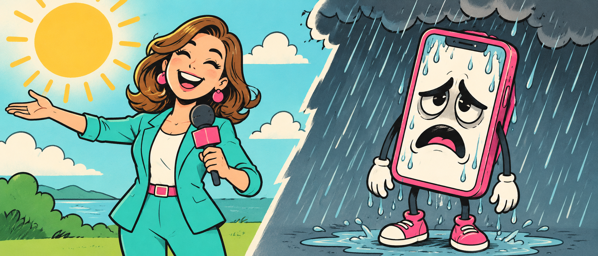

<section id="meme-weather" style="background:#000">
<h2 class="t nok">CI: «У МЕНЯ ВСЁ ХОРОШО»</h2>
<p class="meme-label sort" style="left:300px;top:242px;width:640px">CI</p>
<p class="meme-label hash" style="left:980px;top:242px;width:640px">iPhone · utility</p>

<p class="meme-caption">Прогноз точный. <span class="hash">Город другой</span></p>
<aside>Прогноз точный, только город другой. [пауза 2 с]<br>Проверяем на целевом устройстве. А теперь вернёмся к задаче: часть данных у нас уже готова.<br>[→ следующий слайд]<br><br>──────────<br>Источники и условия<br>Оригинальная иллюстрация ImageGen, V6; assets/src/img/memes_v6_late_prompts.txt. Мем №57. CI отвечает про своё окружение. Погода — метафора различия окружений, не утверждение об измерении погоды или ненадёжности CI.<br></aside>
</section>
